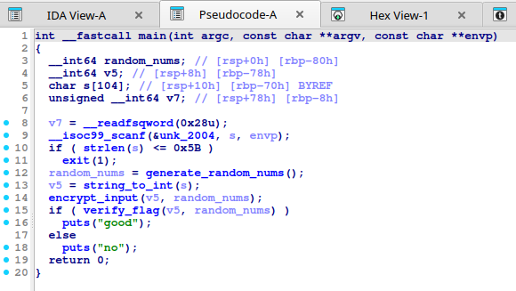

Shakti CTF 2025 Writeup
Rafael Putra / July 2025 (5394 Words, 30 Minutes)
Hari Jumat, 25 Juli 2025 hingga Sabtu, 26 Juli 2025 kemarin saya mengikuti kompetisi CTF Shakti 2025 dan berhasil menyelesaikan beberapa tantangan web, reverse engineering, dan satu soal forensic. Namun karena server webnya sudah tidak bisa diakses kembali dan saya lupa untuk menyimpan beberapa screenshot soal-soalnya, saya hanya menuliskan writeup forensic dan reverse engineering saja.
Forensic
Glitch In Frame
Deskripsi
Kael intercepted a strange transmission. Nyra says it’s just a looped diagnostic — but something feels off. Can you find the hidden message?
Solusi
Diberikan file ZIP yang didalamnya terdapat file PCAP. File PCAP (Packet Caputre) adalah format file untuk menyimpan paket dari lalu lintas jaringan. File tersebut bisa kita analisis dengan Wireshark.
Dari gambar terlihat terdapat komunikasi TCP (local) terjadi antara dua port 50511 dan 9988, kita dapat analisis lebih lanjut dengan klik salah satu packet pada protocol TCP, lalu klik kanan > Follow > Follow TCP Stream.
Terdapat komunikasi antara Nyra dengan Kael, pada komunikasi tersebut terlihat Nyra mengirim suatu file pada Kael, dan dapat dilihat terdapat awalan GIF89a yang jika mengacu pada Wikipedia, ini merupakan signature untuk file GIF, sehingga bisa disimpulkan file yang dikirim ini adalah file GIF. Selanjutnya ekstrak GIF tersebut dari file PCAP dengan foremost.
$ foremost chall.pcap
Didapatkan file GIF yang ternyata berisi flagnya.
File GIF bekerja dengan menggabungkan beberapa frame gambar dalam satu file, gunakan python untuk mengekstrak keselurahan frame GIF untuk mempermudah mendapatkan flag.

Reverse Engineering
gooGOOgaaGAA
Solusi
Diberikan file googoogaagaa.py, analisis isinya
def gaga(text, key):
result = []
for i in range(len(text)):
result += chr(ord(text[i]) ^ ord(key[i % len(key)]))
return result
key = "IWANTMOMOS"
encrypted= [':', '?', ' ', '%', ' ', '$', ',', '9', ')', '(', '+', 'c', '#', '7', '\x06', '~', '9', '\x12', '~', ' ', '\x16', '4', '4', ':', 'g', '0']
inp= input("> ")
if (gaga(inp, key)==encrypted):
print("YOU DID ITTT :))")
else:
print("try again :(")
Berikut cara kerja program tersebut:
- Program menerima input pengguna dan menyimpannya ke dalam variabel inp
- Input pengguna akan dicek bersama dengan variabel key ke dalam fungsi gaga dan dibandingkan hasilnya apakah sama seperti pada variabel encrypted.
- Fungsi gaga menerima dua argumen, text dan key. Variabel result diinisialisasi di awal sebagai array kosong untuk mengisi hasil XOR antara text dengan key. Terlihat bahwa key diakses dengan
key[i % len(key)]yang menangani apabila text lebih panjang dari key maka key akan diulang.
Dari soal seperti ini, bisa diasumsikan flagnya berada pada variabel encrypted. Buat solver script dengan python, untuk menyelesaikannya hanya perlu dilakukan XOR antara variabel encrypted dengan key.
def decrypt(encrypted, key):
result = ''
for i in range(len(encrypted)):
result += chr(ord(encrypted[i]) ^ ord(key[i % len(key)]))
return result
encrypted = [':', '?', ' ', '%', ' ', '$', ',', '9', ')', '(', '+', 'c', '#', '7', '\x06', '~', '9', '\x12', '~', ' ', '\x16', '4', '4', ':', 'g', '0']
key = "IWANTMOMOS"
plaintext = decrypt(encrypted, key)
print("Flag:", plaintext)
Ketika solver dijalankan, didapatkan flagnya
$ python3 solver.py
Flag: shaktictf{b4byR3v_1s_cut3}
OpenSesame
Deskripsi
You discover the secret treasure in a thieves’ den, what might the magic password be?
Solusi
Diberikan file OpenSesame, hal pertama yang perlu dilakukan adalah identifikasi file.
$ file OpenSesame
OpenSesame: ELF 64-bit LSB pie executable, x86-64, version 1 (SYSV), dynamically linked, interpreter /lib64/ld-linux-x86-64.so.2, BuildID[sha1]=ae018dbaad720ec966ba2b6048c0985194bc9842, for GNU/Linux 3.2.0, not stripped
File ELF (Executable Linkable Format) 64-bit yang merupakan executable di sistem operasi GNU/Linux (EXE di Windows), dengan binary yang not stripped yang menandakan tidak adanya penghapusan simbol seperti nama fungsi. Langsung coba jalankan programnya.
$ ./OpenSesame
~Speak the magic words And Enter~
Your answer:
test
The thieves spot you at the cave. Run!
Program sederhana yang meminta input pengguna, jika input valid, bisa didapatkan flagnya. Lanjutkan analisis secara statis dengan decompiler IDA. Hal pertama yang wajib dianalisis adalah logika utama dari program, beberapa bahasa pemrograman menggunakan fungsi main sebagai fungsi pertama yang akan dieksekusi sekaligus logika utama dari program.
int __fastcall main(int argc, const char **argv, const char **envp)
{
int v3; // ebx
int v4; // ebx
int v5; // ebx
int v6; // ebx
int i; // [rsp+0h] [rbp-1F0h]
int j; // [rsp+4h] [rbp-1ECh]
int k; // [rsp+8h] [rbp-1E8h]
int m; // [rsp+Ch] [rbp-1E4h]
int n; // [rsp+10h] [rbp-1E0h]
int ii; // [rsp+14h] [rbp-1DCh]
int jj; // [rsp+18h] [rbp-1D8h]
int kk; // [rsp+1Ch] [rbp-1D4h]
_DWORD v16[48]; // [rsp+20h] [rbp-1D0h]
_DWORD v17[48]; // [rsp+E0h] [rbp-110h]
char s[56]; // [rsp+1A0h] [rbp-50h] BYREF
unsigned __int64 v19; // [rsp+1D8h] [rbp-18h]
v19 = __readfsqword(0x28u);
v17[0] = 345;
v17[1] = 312;
v17[2] = 291;
v17[3] = 321;
v17[4] = 348;
v17[5] = 315;
v17[6] = 297;
v17[7] = 348;
v17[8] = 306;
v17[9] = 369;
v17[10] = 216;
v17[11] = 315;
v17[12] = 315;
v17[13] = 147;
v17[14] = 315;
v17[15] = 147;
v17[16] = 315;
v17[17] = 147;
v17[18] = 315;
v17[19] = 315;
v17[20] = 285;
v17[21] = 282;
v17[22] = 285;
v17[23] = 282;
v17[24] = 285;
v17[25] = 285;
v17[26] = 153;
v17[27] = 150;
v17[28] = 156;
v17[29] = 153;
v17[30] = 150;
v17[31] = 156;
v17[32] = 150;
v17[33] = 285;
v17[34] = 153;
v17[35] = 330;
v17[36] = 318;
v17[37] = 144;
v17[38] = 363;
v17[39] = 285;
v17[40] = 342;
v17[41] = 153;
v17[42] = 354;
v17[43] = 285;
v17[44] = 282;
v17[45] = 285;
v17[46] = 375;
puts("~Speak the magic words And Enter~");
puts("Your answer: ");
__isoc99_scanf("%s", s);
for ( i = 0; i < strlen(s); ++i )
v16[i] = s[i];
seed_one();
for ( j = 0; j < strlen(s); ++j )
{
v3 = v16[j];
v16[j] = rand() ^ v3;
}
seed_two();
for ( k = 0; k < strlen(s); ++k )
{
v4 = v16[k];
v16[k] = rand() ^ v4;
}
seed_one();
for ( m = 0; m < strlen(s); ++m )
{
v5 = v16[m];
v16[m] = rand() ^ v5;
}
seed_two();
for ( n = 0; n < strlen(s); ++n )
{
v6 = v16[n];
v16[n] = rand() ^ v6;
}
for ( ii = 0; ii < strlen(s); ++ii )
v16[ii] = l_rotate((unsigned int)v16[ii], 3LL);
for ( jj = 0; jj < strlen(s); ++jj )
v16[jj] = 3 * r_rotate((unsigned int)v16[jj], 35LL);
for ( kk = 0; kk < strlen(s); ++kk )
{
if ( v16[kk] != v17[kk] )
{
puts("The thieves spot you at the cave. Run!");
exit(0);
}
}
puts("boop you have gold now");
return 0;
}
Mari analisis apa yang terjadi pada fungsi main. Terdapat inisialisasi nilai pada v17, simpan untuk saat ini, mungkin nanti diperlukan untuk menyelesaikan challenge-nya. Dari fungsi main tersebut program menerima input string (format specifier %s) melalui perintah scanf dan nilainya disimpan dengan variabel s.
puts("~Speak the magic words And Enter~");
puts("Your answer: ");
__isoc99_scanf("%s", s);
Kemudian program mengakses semua input tersebut dan dimasukkan ke dalam variabel v16 dalam bentuk array. Sekarang nilai v16 sama seperti s (input).
for ( i = 0; i < strlen(s); ++i )
v16[i] = s[i];
Setelah fungsi for terjadi pemanggilan fungsi seed_one dan dilanjutkan dengan fungsi for kembali. Pada fungsi for tersebut, v3 menyimpan nilai sementara dari setiap array variabel v16, kemudian dilakukan operasi XOR per karakter v16 dengan fungsi rand untuk menghasilkan pseudo-random number.
for ( j = 0; j < strlen(s); ++j )
{
v3 = v16[j];
v16[j] = rand() ^ v3;
}
Selanjutnya program mengulangi hal yang sama tiga kali dengan menggunakan seed yang berbeda (seed_one dan seed_two). Fungsi rand tidak akan menghasilkan angka acak jika tidak menggunakan seed yang diinisialisasi dengan srand, berikut adalah isi dari seed_one dan seed_two
void seed_one()
{
srand(0x4F347u);
}
void seed_two()
{
srand(0x59334u);
}
Pada bagian selanjutnya, program tetap mengakses v16 yang tadi sudah di acak nilainya dengan XOR dan rand beberapa kali, kemudian memanggil fungsi l_rotate dan r_rotate
for ( ii = 0; ii < strlen(s); ++ii )
v16[ii] = l_rotate((unsigned int)v16[ii], 3LL);
for ( jj = 0; jj < strlen(s); ++jj )
v16[jj] = 3 * r_rotate((unsigned int)v16[jj], 35LL);
Fungsi l_rotate dan r_rotate menerima dua argumen, v16 dan jumlah bit yang ingin dishift kekiri dan kekanan, serta bilangan yang hilang setelah dishift akan ditempatkan pada bagian kanan (a1 >> (32 -a2)) dan (a1 << (32 - a2)) kemudian digabung dengan hasil dari shift (a1 << a2) dan (a1 >> a2)
__int64 __fastcall l_rotate(int a1, char a2)
{
return (a1 << a2) | (a1 >> (32 - a2));
}
__int64 __fastcall r_rotate(int a1, char a2)
{
return (a1 >> a2) | (a1 << (32 - a2));
}
Terakhir, program akan melakukan pengecekan nilai v16 yang sudah dilakukan operasi XOR dengan rand dan l_rotate maupun r_rotate dengan v17.
for ( kk = 0; kk < strlen(s); ++kk )
{
if ( v16[kk] != v17[kk] )
{
puts("The thieves spot you at the cave. Run!");
exit(0);
}
}
Buat solver script dengan python untuk mendapatkan flagnya, v17 adalah hasil akhir dari flagnya, untuk mendapatkan flagnya perlu membalik beberapa operasi seperti l_rotate dan r_rotate, penggunaan seed dan implementasi rand(), serta XOR.
# Ekstrak nilai v17 yang didefinisikan di awal program
v17 = [
345, 312, 291, 321, 348, 315, 297, 348, 306, 369,
216, 315, 315, 147, 315, 147, 315, 147, 315, 315,
285, 282, 285, 282, 285, 285, 153, 150, 156, 153,
150, 156, 150, 285, 153, 330, 318, 144, 363, 285,
342, 153, 354, 285, 282, 285, 375
]
# Tulis ulang fungsi r_rotate dan l_rotate
def r_rotate(val, bits):
bits %= 32
return ((val >> bits) | (val << (32 - bits))) & 0xFFFFFFFF
def l_rotate(val, bits):
bits %= 32
return ((val << bits) | (val >> (32 - bits))) & 0xFFFFFFFF
# Fungsi for terakhir yang mengakses l_rotate dan
# r_rotate perlu ditulis ulang dalam posisi dibalik
def reverse_transform(v):
# Pada for terakhir terdapat operasi perkalian
# v16[jj] = 3 * r_rotate((unsigned int)v16[jj], 35LL);
# Dibalik menjadi x // 3 (pembagian)
v = [x // 3 for x in v]
# Terdapat r_rotate(v16[jj], 35)
# Dibalik dengan l_rotate dengan
# mencari 35 % 32 (karena hanya berlaku pada
# 32 bit)
v = [l_rotate(x, 35 % 32) for x in v]
# Terdapat l_rotate((unsigned int)v16[ii], 3LL);
# Dibalik dengan r_rotate
v = [r_rotate(x, 3) for x in v]
return v
# Implementasi rand sama seperti pada C
def simple_rand(seed, count):
state = seed
result = []
for _ in range(count):
# Linear Congruential Generator (LCG) untuk menghasilkan
# pseudo-random number
state = (state * 1103515245 + 12345) & 0x7FFFFFFF
result.append(state)
return result
def get_flag():
v = reverse_transform(v17)
# Urutan seed yang dipakai di program
seeds = [0x4F347, 0x59334, 0x4F347, 0x59334]
rand_numbers = []
# Ambil semua angka rand sesuai urutan pemanggilan
for seed in seeds:
rand_numbers.extend(simple_rand(seed, len(v)))
# XOR dengan urutan dibalik
for i in reversed(range(len(rand_numbers))):
idx = i % len(v)
v[idx] ^= rand_numbers[i]
flag = ''.join(chr(x & 0xFF) for x in v)
return flag
print("Flag:", get_flag())
Ketika solvernya dijalankan, didapatkan flagnya
$ python3 solver.py
Flag: shaktictf{Hii1i1i1ii_^_^__3243242_3nj0y_r3v_^_}
Uwuwuwuwu
Solusi
Saya menyelesaikan challenge ini setelah kompetisinya selesai. Diberikan file chall, identifikasi filenya
$ file chall
chall: ELF 64-bit LSB pie executable, x86-64, version 1 (SYSV), dynamically linked, interpreter /lib64/ld-linux-x86-64.so.2, BuildID[sha1]=49c838c2f24aa4e7621c785b3e91bff12304aaaf, for GNU/Linux 3.2.0, not stripped
File ELF 64 bit not stripped, decompile fungsi main dengan IDA.

Program melakukan pengecekan argumen saat program dijalankan (argc <= 1), jika tidak ada argumen tambahan saat program dijalankan, maka program akan exit. Kemudian program akan mengonversi argv[1] (argumen pertama saat program dijalankan) menjadi integer dalam basis 10 dan menyimpannya ke dalam v4, sehingga v4 adalah input pengguna. Lalu terdapat perintah if yang membandingkan nilai dari verify_key(v4) != 1 (true), maka akan exit, dan jika verify_key(v4) bernilai true, maka program akan lanjut ke baris setelahnya. Selanjutnya coba analisis verify_key untuk mengetahui apa yang dilakukan oleh fungsi tersebut terhadap input pengguna.

Dari fungsi verify_key tersebut terdapat inisialisasi array v4 dan v3. Kemudian input pengguna (a1) dimasukkan ke dalam for dan dilakukan pengecekan melalui if, jika a1 % v4[i] nilainya tidak sesuai dengan v3[i] maka akan return 0 beserta output “Nope”. Berikut penggambarannya.
Untuk i=0: if (a1 % 123 == 92)
Untuk i=1: if (a1 % 456 != 29)
Dan seterusnya
Sehingga kita perlu mencari a1 yang tepat untuk memenuhi kondisi if tersebut agar ketika a1 dibagi menjadi v4[i] sisa hasil baginya adalah v3[i]. Persoalan seperti ini bisa diselesaikan dengan Chinese Remainder Theorem (CRT), kita bisa gunakan python, ekstrak nilai v3 dan v4-nya, lalu gunakan CRT untuk menemukan a1 yang memenuhi semua kondisi tersebut.
from sympy.ntheory.modular import crt
v4 = [123, 456, 789, 987, 654, 321]
v3 = [ 92, 29, 380, 2, 497, 296]
x, _ = crt(v4, v3)
print(f"a1: {x}")
Ketika kode python tersebut dijalankan, maka didapatkan a1 = 2147491901. Setelah memasukkan nilai a1 tersebut, program tidak menampilkan output “Nope” yang menandakan a1-nya sesuai, namun program nampaknya terus berjalan ketika a1 tersebut dimasukkan, coba lanjutkan analisis fungsi main setelah verify_key bernilai true.
v5 = malloc(0xFA00uLL);
initialise_shellcode(v5);
shellcode = generate_shellcode(v4, v5);
wx_shellcode(shellcode);
Terdapat inisialisasi memori dengan malloc sebesar 0xFA00 byte (64KB) dan menyimpannya pada pointer v5. Kemudian terdapat pemanggilan fungsi initialise_shellcode(v5), ketika ingin mendecompile fungsi initialise_shellcode, muncul error decompilation failure: too big function, hal ini mungkin terjadi karena isi fungsi initialise_shellcode terlalu besar sehingga IDA tidak bisa menanganinya, namun tetap bisa membuka hasil disassembly fungsi initialise_shellcode tersebut.

Dari gambar tersebut kita bisa melihat panjang isi fungsi tersebut. Setelah diteliti lebih lanjut, ternyata isi fungsi initialise_shellcode hanya melakukan pengulangan tertentu. Bagian teratas fungsi initialise_shellcode akan melakukan setup stack dan register
push rbp
mov rbp, rsp
push r15
push r14
push r13
push r12
push rbx
Kemudian di baris selanjutnya mengolah data dari rdi (nilai dari v5) dan menyimpannya pada rbp+var_30.
; rbp+var_30 = v5
mov [rbp+var_30], rdi
; rax = v5
mov rax, [rbp+var_30]
; ebx = 80002042h (konstan)
mov ebx, 80002042h
; Tulis 8 byte ke offset 0
mov [rax], rbx
; rax = rbp+var_30
mov rax, [rbp+var_30]
; rax += 8 (offset)
add rax, 8
; r15d = 80002078h (konstan)
mov r15d, 80002078h
; Tulis 4 byte ke offset 8
mov [rax], r15d
mov rax, [rbp+var_30]
add rax, 10h
mov ebx, 80002071h
mov [rax], rbx
mov rax, [rbp+var_30]
add rax, 18h
mov esi, 8000207Bh
mov [rax], rsi
mov rax, [rbp+var_30]
add rax, 20h ; ' '
mov r8d, 8000203Fh
mov [rax], r8
...
Terjadi pengulangan terus menerus, sehingga dapat disimpulkan fungsi initialise_shellcode tersebut mengisi nilai konstan ke dalam malloc dari v5. Kemudian lanjutkan analisis fungsi main.
shellcode = generate_shellcode(v4, v5);
wx_shellcode(shellcode);
Terdapat dua fungsi, generate_shellcode yang menerima argumen input (v4) dengan malloc (v5) yang disimpan ke dalam variabel shellcode, kemudian variabel tersebut dipanggil dengan fungsi wx_shellcode. Pada fungsi generate_shellcode, terdapat alokasi memori dengan malloc sebesar 0x1CD8, kemudian kedua argumen (a1 dan a2) akan dimasukkan ke fungsi for sebanyak 7384 perulangan, didalam fungsi tersebut terjadi operasi XOR antara a2 (mengambil 8 byte) dengan nilai dari a1 (input)
_BYTE *__fastcall generate_shellcode(char a1, __int64 a2)
{
int i; // [rsp+14h] [rbp-Ch]
_BYTE *v4; // [rsp+18h] [rbp-8h]
v4 = malloc(0x1CD8uLL);
for ( i = 0; i <= 7383; ++i )
v4[i] ^= *(8LL * i + a2) ^ a1;
return v4;
}
Selanjutnya pada fungsi wx_shellcode, terjadi pembentukan file baru bernama slippery_shellcode yang berisi shellcode yang sudah dibuat di fungsi generate_shellcode.

Ketika program menghasilkan a1 yang sesuai, maka program akan membuat file baru bernama sliperry_shellcode. Maka lanjutkan dengan analisis file sliperry_shellcode.
$ file slippery_shellcode
slippery_shellcode: ELF 64-bit LSB pie executable, x86-64, version 1 (SYSV), statically linked, no section header
Ternyata program tadi membuat file ELF 64 bit dengan no section header, cek apakah file tersebut dipack dengan perintah strings
...
UPX!
UPX!
Dibaris terakhir perintah strings terdapat tanda bahwa file sliperry_shellcode ini di pack dengan UPX, kita perlu mengunpack file tersebut dengan UPX.
$ upx -d slippery_shellcode
Setelah berhasil diunpack, buka file sliperry_shellcode ke IDA dan decompile fungsi main.

Program tersebut menerima input pengguna berupa string, kemudian cek panjang string apakah kurang dari 91, jika panjangnya kurang dari 91, maka program akan exit, dan jika lebih dari 91, perintah-perintah di baris selanjutnya akan dijalankan. Variabel random_nums menyimpan nilai dari fungsi generate_random_nums, mari analisis fungsi tersebut.
_DWORD *generate_random_nums()
{
int i; // [rsp+4h] [rbp-1Ch]
_DWORD *v2; // [rsp+8h] [rbp-18h]
v2 = malloc(0x170uLL);
for ( i = 0; i <= 91; ++i )
v2[i] = rand();
return v2;
}
Dari fungsi tersebut terdapat pembentukan alokasi memori dengan malloc sebesar 0x170, kemudian dilakukan operasi for sampai 92, serta mengisi nilai v2 dengan rand().
Selanjutnya variabel v5 diisi dengan fungsi string_to_int yang akan mengubah input menjadi integer. Kemudian terdapat pemanggilan fungsi encrypt_input yang akan melakukan operasi XOR setiap 4 byte antara v5 dengan random_nums.
_DWORD *__fastcall encrypt_input(__int64 a1, __int64 a2)
{
_DWORD *result; // rax
int i; // [rsp+1Ch] [rbp-4h]
for ( i = 0; i <= 91; ++i )
{
result = (4LL * i + a1);
*result ^= *(4LL * i + a2);
}
return result;
}
Selanjutnya terdapat fungsi verify_flag yang akan memvalidasi apakah input kita sesuai dengan encrypted_flag. Terlihat bahwa terjadi xor antara a1 dengan nilai-nilai yang berada pada encrypted_flag, jika hasilnya tidak sama, maka akan return 0.
__int64 __fastcall verify_flag(__int64 a1)
{
int i; // [rsp+1Ch] [rbp-4h]
for ( i = 0; i <= 91; ++i )
{
if ( xor(*(4LL * i + a1), encrypted_flag[i]) != 1 )
return 0LL;
}
return 1LL;
}
Cek nilai encrypted_flag.

Secara keseluruhan program sliperry_shellcode akan meminta input pengguna, melakukan xor dengan rand kemudian dicek setelah di XOR dengan rand apakah nilainya sama seperti encrypted_flag. Untuk menyelesaikan challenge ini bisa dengan mengambil seluruh nilai encrypted_flag kemudian XOR dengan rand, tetapi kita perlu mencari seed yang sesuai untuk mendapatkan rand yang sama seperti program. Dari fungsi main juga tidak terlihat inisialisasi srand dengan seed tertentu, maka kita perlu cari seed tersebut sebelum fungsi main dipanggil, cek pada bagian _start
xor ebp, ebp
mov r9, rdx ; rtld_fini
pop rsi ; argc
mov rdx, rsp ; ubp_av
and rsp, 0FFFFFFFFFFFFFFF0h
push rax
push rsp ; stack_end
xor r8d, r8d ; fini
xor ecx, ecx ; init
lea rdi, main ; main
call cs:__libc_start_main_ptr
Coba cek fungsi init
push rbp
mov rbp, rsp
mov edi, 4545h ; seed
call _srand
nop
pop rbp
retn
Terdapat pemanggilan fungsi srand dengan seed 0x4545, ini bisa kita gunakan untuk mendapatkan flag. Buat solver dengan python.
import ctypes
# Ekstrak nilai encrypted_flag
encrypted_flag = [
0x5093A472, 0x06D32C90, 0x6AE1B35A, 0x7A658197, 0x0E3CC12F,
0x2DF74860, 0x7A9E978A, 0x121FA3A5, 0x2B2F5ADA, 0x400C2D44,
0x323D7D84, 0x0B343F1E, 0x425336C1, 0x5A0EE279, 0x74DDA8AA,
0x79124CE3, 0x6197E690, 0x1543F6A8, 0x38EE57DD, 0x4D606612,
0x1CCF1581, 0x2956795C, 0x51A48068, 0x5EBBC210, 0x4B35434A,
0x51707BC4, 0x05124C52, 0x0E74D996, 0x6A50A234, 0x513A4E22,
0x1E8E74DB, 0x3AE4466C, 0x580D7A82, 0x097027AD, 0x3549C82E,
0x664A3C66, 0x37677055, 0x2FE86060, 0x7869E07E, 0x6296CAA3,
0x6FF48D44, 0x2AA75E7E, 0x6DCB0988, 0x3247C383, 0x04B6405B,
0x62A8B241, 0x2B5A10C4, 0x664E26D5, 0x77ECA91C, 0x644868F9,
0x33AE8D2B, 0x14BBBF7E, 0x0D9EE1A7, 0x05530DD0, 0x737781D8,
0x58D4248E, 0x56C38974, 0x7889CDB2, 0x6748FE96, 0x41142BF6,
0x49C41C6F, 0x05D773DF, 0x7BF871A1, 0x21D19684, 0x0F479BED,
0x31423A6C, 0x081BD337, 0x46AF0BDA, 0x612A9A42, 0x0085B321,
0x2945D659, 0x511F27F4, 0x2B2D111D, 0x1710E008, 0x0366EB1D,
0x2FE351CE, 0x79B992AA, 0x2EC0FC01, 0x163178D8, 0x71A63C60,
0x130964D2, 0x49E005E6, 0x0661FB5D, 0x20A846DE, 0x4F331319,
0x79D97C84, 0x797C6B12, 0x25F69CAD, 0x72634A1C, 0x60C56A33,
0x670AC85B, 0x3C2766AC
]
# Seed dari init
seed = 0x4545
# Inisialisasi srand dengan seed yang ditentukan
libc = ctypes.CDLL("libc.so.6")
libc.srand(seed)
# Decrypt
decrypted = b''
for block in encrypted_flag:
r = libc.rand()
# XOR dengan hasil rand()
decrypted_block = block ^ r
decrypted += decrypted_block.to_bytes(4, byteorder='little')
print(decrypted.decode('utf-8'))
Setelah solver script tersebut dijalankan, didapatkan flagnya
$ python3 solver.py
w3ll_w3ll_w3ll...y0u_h4ve_manag3d_t0_tackle_s0m3_of_my_t0ugher_tr4ps.G0od_job!_ke3p_g0ing_:)